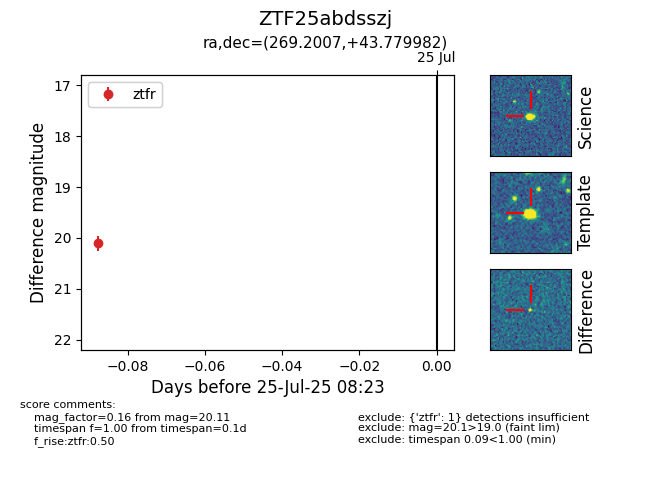

Target ZTF25abdsszj at 2025-07-25 08:23, see:
FINK: fink-portal.org/ZTF25abdsszj
Lasair: lasair-ztf.lsst.ac.uk/objects/ZTF25abdsszj
ALeRCE: alerce.online/object/ZTF25abdsszj
alt names
ZTF25abdsszj (ztf,fink)
coordinates:
equatorial (ra, dec) = (269.2007,+43.77998)
galactic (l, b) = (70.4159,+27.85447)
photometry
last ztfr=20.11
1 ztfr detections
